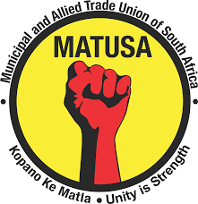
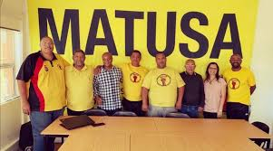

REGISTERED TRADE UNIONS IN SOUTH AFRICA
TRADE UNIONS IN SOUTH AFRICA
LABOUR GUIDE
SECTOR OF THE ECONOMY UNION
ORGANISATION
IN THE SECTOR.
BENEFIT OF BEING A MEMBER
We are the voice
of the workers
for socialist society

- Free funeral cover to the value of R3000.00 to members
- Optional membership to Matusa Funeral Scheme to members and their extended family
- Preferred Medical Aid Broking Company
- Short term emergency loans to a maximum of R10 000.00
- Bursary scheme to deserving members children
- IDN is our contracted registered financial service provider
- Savings scheme
- Matusa blanket or cash value
- Free T shirt upon joining
Municipal and Allied Trade Union South AFRICA
(KOPANO KE MATLA)
Unity is Strength


Revolutionary and socialist oriented We represent 30 unions working to create an independent, campaigning and democratic trade union Allied. We shall defend, if need be, with our lives, the fighting independence of our revolutionary and socialist oriented federation. The land shall be shared among those who work it! The ownership of land in South Africa has been a source of conflict since the European colonialists first landed at the Cape, took over the indigenous people’s land and brutally suppressed any who stood in their way.
To unite all workers under one banner from the workplace to the community, and to ensure that the fragmentation of unions is reversed and mergers take place where appropriate. To initiate campaigns and support those of affiliates, and fraternal organisations that complement the aims of the Federation. To use all of the means available to it to defend and extend the conditions of workers and their communities including current legislation where appropriate To unite all workers under one banner from the workplace to the community and ensure that the MATUSA of union is reversed and mergers take place where appropriate. To support new and smaller unions to recruit and sustain membership and infrastructure and secure the support of all unions for this purpose.
Contact information
HEAD OFFICE
WESTERN CAPE
MPUMALANGA
M05 Baker Square
De Beers Avenue Paardevlei
Somerset West 7130
P.O Box 14425
Kenwyn
7790
Tel No: 021 8516050
Cell: 0825611178
Fax: 0864592844
Email: info@matusa.org.za
Tel No: 021 8516050
Email: info@matusa.org.za
WESTERN CAPE
Tel No: 021 8516050
Email: wc@matusa.org.za
MPUMALANGA
Tel No: 021 8516050
Email: info@matusa.org.za
NORTHERN CAPE
GAUTENG
NORTH WEST
LIMPOPO
FREE STATE
KWA ZULU NATAL
Tel No: 021 8516050
Email: info@matusa.org.za
Tel No: 021 8516050
Email: gp@matusa.org.za
NORTH WEST
Tel No: 021 8516050
Email: nw@matusa.org.za
LIMPOPO
Tel No: 021 8516050
Email: info@matusa.org.za
FREE STATE
Tel No: 021 8516050
Email: info@matusa.org.za
KWA ZULU NATAL
Tel No: 021 8516050
Email: kzn@matusa.org.za